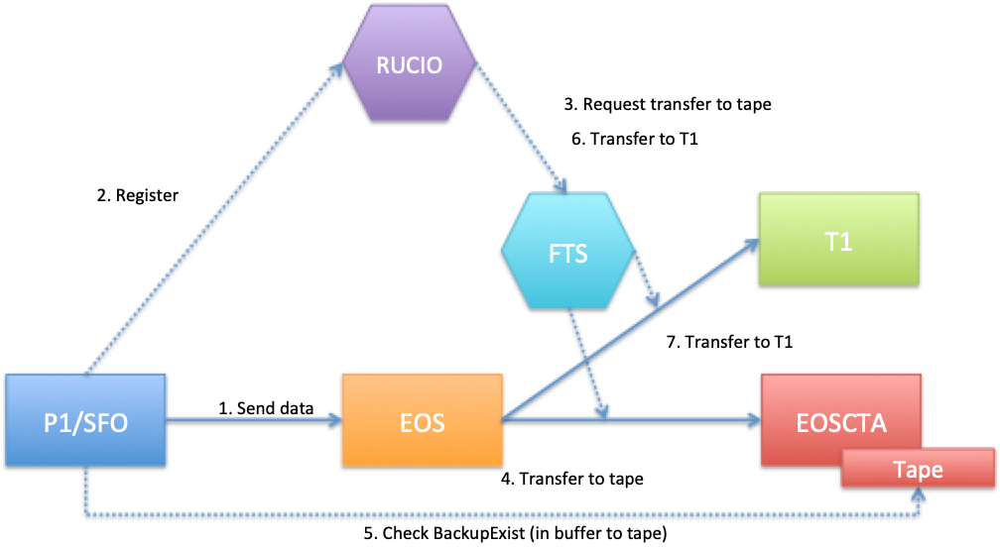
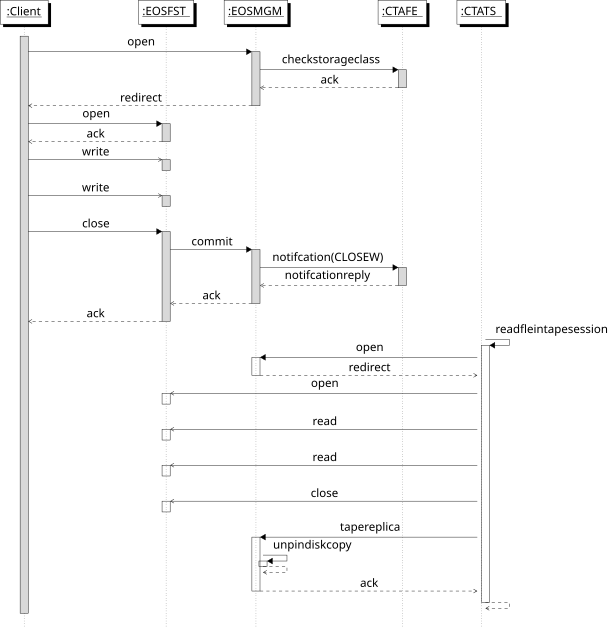

Deprecated
This page is deprecated and may contain information that is no longer up to date.
Archive Workflow#
Presentation
Introduction and Overview#
There are two main use cases for archiving files to tape:
- Raw data, sent to EOSCTA from the "pit" (DAQ) via FTS or XRootD copy (
xrdcp) - Reprocessed data, in most cases a transfer between EOS and EOSCTA using FTS and a data management framework such as Rucio or Dirac.
The file movements may or may not use FTS to orchestrate the transfer. The example of ATLAS is shown in the figure below; other experiments have similar workflows but the details vary.

On the EOSCTA side, files are created in the namespace by a CREATE workflow event and are archived to tape following a CLOSEW (CLOSE Write) workflow event.
It is important to note that the EOS instance in EOSCTA is a temporary staging area for files on their way to/from tape. When the file is successfully archived, it will be automatically deleted from the buffer.
Likewise, if archiving fails before the archive request is queued, the file will be deleted from the EOS disk buffer, and an error will be reported to the client. It is expected that the client will attempt to re-send the file in this case. See below for more details on how different errors are handled.
Archive File#
The figure below shows the sequence of a client writing a file to EOS. The storage class is checked on CREATE and a synchronous archive request is queued on CLOSEW.
This figure is slightly out-of-date; now there is direct communication between the FST and CTA Frontend for some parts of the workflow, bypassing the MGM. To be updated.

EOS Events handled by CTA Frontend#
EOS-CTA events are synchronous. If CTA fails during either event, no archive request is queued. The file will be deleted from the EOS buffer and an error is reported to the client.
For more details on error handling, see How failures are handled before and after the Archive Request is queued.
EOS Events not handled by CTA Frontend#
- OPENW: We do not handle OPENW events, because files on tape are immutable
EOS generates an OPENW event when an already-existing file is opened for writing. CTA does not allow file modification, so the OPENW
workflow is not supported. This should be enforced by system administrators by adding an immutable flag (!u) to the ACL of tape-backed directories
in EOS, or as a rule.
1. Configure EOS for tape-backed operation#
A. Enable tape features#
Tape-related features including the "proto" workflow event handlers are disabled by default. To enable these features, set tapeenabled to true.
protowfendpoint is the hostname and port of the CTA Frontend.
protowfresource should always be set to the literal /ctafrontend. The XRootD protocol allows for different resources
on the server (see XRootD Scalable Service Interface
documentation). In practice only /ctafrontend is defined.
In /etc/xrd.cf.mgm:
mgmofs.tapeenabled true
mgmofs.protowfendpoint ctafrontend:10955
mgmofs.protowfresource /ctafrontend
Also ensure that v2 of the file system object instantiation API is enabled:
xrootd.fslib -2 libXrdEosMgm.so
The -2 tells XRootD that the MGM will handle query prepare requests. (In v1 this was specified with ofs.preplib which is no longer required in v2).
In /etc/xrd.cf.fst:
fstofs.protowfendpoint ctafrontend:10955
fstofs.protowfresource /ctafrontend
B. Create extended attributes on destination directory#
# eos attr ls /eos/ctaatlas/archive
sys.acl="u:10763:rwx+dp,u:98119:rwx+dp,z:!u,u:0:+u"
sys.cta.storage_class="migration"
sys.eos.btime="1592827411.338239153"
sys.forced.checksum="adler"
sys.link.workflow.sync::abort_prepare.default="proto"
sys.link.workflow.sync::archive_failed.default="proto"
sys.link.workflow.sync::archived.default="proto"
sys.link.workflow.sync::closew.default="proto"
sys.link.workflow.sync::closew.retrieve_written="proto"
sys.link.workflow.sync::create.default="proto"
sys.link.workflow.sync::delete.default="proto"
sys.link.workflow.sync::evict_prepare.default="proto"
sys.link.workflow.sync::prepare.default="proto"
sys.link.workflow.sync::retrieve_failed.default="proto"
The value "proto" for the workflow event handlers is a literal which is used by the MGM and FST to send event handling
requests via the XRootD SSI Protocol Buffer interface used
by the CTA Frontend.
sys.acl user flags are rwx+dp. +d means the user is allowed to delete the file. p means the user has PREPARE permission,
i.e. bring a file online from tape to disk. z: is a rule for all non-root users; z:!u means that files are not updatable:
they are immutable and may not be appended to or modified.
sys.cta.storage_class must be set to a valid CTA storage class with a defined archive route. This is inherited by
newly-created files and validated during the CREATE workflow event.
2. CREATE Workflow Event#
EOS MGM#
The process starts when the client transfers a file to EOS via FTS or xrdcp.
The XRootD copy call is handled by the MGM OFS plugin method XrdMgmOfsFile::open(). This calls
workflow.Trigger("sync::create", ...), which passes the event to the Workflow Engine dispatcher
WFE::Job::DoIt().
If the extended attribute sys.workflow.sync::create.default="proto" has been defined on the directory
(see above), then the event handler is called:
else if (gOFS->mTapeEnabled && method == "proto") {
return HandleProtoMethodEvents(errorMsg, ininfo);
}
The sync::create workflow event is handled by WFE::Job::HandleProtoMethodCreateEvent(). This method populates a Google
Protocol Buffer with the file metadata and sends it to CTA using the XRootD SSIv2
protocol.
The protocol buffer message format is defined in the Git submodule xrootd-ssi-protobuf-interface, which is shared by EOS and CTA.
The SSI Protobuf wrapper API is also implemented in this submodule. The Send() method sends a protocol buffer across the
SSI transport layer and adds synchronisation to the asynchronous SSI protocol. It is called from WFE::Job::SendProtoWFRequest():
service.Send(request, response);
The request message contains the file metadata, including the Storage Class (inherited from the directory if not explicitly defined).
CTA Frontend#
When the CTA Frontend receives a CREATE event, it performs the following operations:
- Validate the Storage Class:
*the Storage Class (
sys.cta.storage_class) exists in the DB- there is a valid archive route(s) and mount policy for the Storage Class and Requester ID
- Generate a unique Archive ID and return it to EOS in the synchronous response
The Storage Class of a file specifies how many tape copies will be created. The archive route maps the Storage Class to a tape pool (or two tape pools in the case of dual-copy Storage Classes). Each Storage Class belongs to a specific Virtual Organisation (VO). Usually it is set as an extended attribute on the directory, which is inherited by new files, e.g.:
sys.archive.storage_class="atlas_raw"
It can also be set explicitly as a parameter in the XRootD URL. The validity of the Storage Class is checked on CREATE in order to fail early for files which cannot be archived. This catches failures due to configuration problems, for example no valid archive route.
The Archive ID of a file is a unique, monotonic number allocated by the CTA Frontend. It is stored as an extended attribute on the file, e.g.:
sys.archive.file_id="4294967296"
The CTA Frontend will reject operations on files which do not have a valid Archive ID.
On receiving a successful response from CTA, EOS writes the Storage Class (sys.cta.storage_class) and the Archive ID
(sys.archive.file_id) into file metadata as extended attributes.
Failures during CREATE#
The CREATE workflow is a pure metadata operation. If any part of the CREATE workflow fails, the MGM will delete the file metadata from the EOS namespace and an error is reported to the client.
3. CLOSEW Workflow Event#
EOS FST#
When a file has been written to disk, the FST OFS plugin is called, see XrdFstOfsFile::_close():
if (mTapeEnabled && isCreation && mSyncEventOnClose &&
mEventWorkflow != common::RETRIEVE_WRITTEN_WORKFLOW_NAME) {
// Queueing error: queueing for archive failed
queueingerror = !QueueForArchiving(statinfo, queueing_errmsg,
archive_req_id);
if (queueingerror) {
deleteOnClose = true;
mLayout->Remove();
if (mLayout->IsEntryServer()) {
capOpaqueString += "&mgm.dropall=1";
}
// Delete the replica in the MGM
XrdOucErrInfo lerror;
if (gOFS.CallManager(&lerror, mCapOpaque->Get("mgm.path"),
mCapOpaque->Get("mgm.manager"), capOpaqueString)) {
eos_warning("(unpersist): unable to drop file id %s fsid %u at
manager %s", hex_fid.c_str(), mFmd->mProtoFmd.fid(),
mCapOpaque->Get("mgm.manager"));
}
}
This code explicitly checks that tapeenabled is set to true and that the workflow event is sync::closew.default. If
so, XrdFstOfsFile::QueueForArchiving() is called, which in turn calls XrdFstOfsFile::NotifyProtoWfEndPointClosew().
XrdFstOfsFile::NotifyProtoWfEndPointClosew() fills a protocol buffer with the file metadata, including the Archive File
ID and Storage Class extended attributes. The protobuf also contains four URL fields which are constructed by EOS and used
by CTA as callbacks:
message Service {
string name = 1; //< name of the service
string url = 2; //< access url of the service
}
message Transport {
string dst_url = 1; //< transport destination URL
string report_url = 2; //< URL to report successful archiving
string error_report_url = 3; //< URL to report errors
}
Three of these URLs are used for file archival. The transport destination URL dst_url is required only for Retrieve events.
Request.notification.wf.instance.url is used by the CTA Tape daemon cta-taped to read the disk file from the
EOS MGM during an Archive event. It has the format:
root://<hostname>.cern.ch/<path>/<filename>?eos.lfn=<fid>
Request.notification.transport.report_url (and error_report_url) is used by the Tape Daemon to asynchronously report
to the EOS MGM that a file has been safely archived to tape (or an error has occurred). It has the format:
eosQuery://<hostname>.cern.ch/<path>/<filename>?mgm.pcmd=event
&mgm.fid=<fid-hex>&mgm.logid=cta&mgm.event=archived&mgm.workflow=default
&mgm.path=<path>/<filename>& mgm.ruid=<ruid>&mgm.rgid=<rgid>
where:
mgm.pcmd=event: execute a workflow event.mgm.event=archived,mgm.workflow=default: execute the archived.default event. In case of failure, the archive_failed.default workflow will be executed instead.mgm.ruid=<ruid>,mgm.rgid=<rgid>: execute the event as user/group<ruid>:<rgid>.
This protobuf is sent by the FST to the CTA Frontend using the Service.Send() method, exactly as the MGM did for the CREATE event.
Finally, when the FST receives a response from the CTA Frontend, it sends a CLOSEW Event to the MGM as well, to process
the metadata (extended attributes) returned by the Send() method.
CTA Frontend#
When the CTA Frontend receives the protobuf, it queues the archive request in the Object Store and synchronously returns a status code to EOS. The address of the request in the Object Store is written as an extended attribute:
sys.cta.archive.objectstore.id="ArchiveRequest-Frontend-ctatest.cern.ch-14148-20200518-14:16:34-0-0"
This address is required to cancel an archival request. One common use case is that ALICE write "probe" files to the EOSCTA endpoint and delete them after a short time. In the meantime, the file is queued for archival. When the probe file is deleted from disk, we want to delete the archive request to avoid an unnecessary tape mount. The address of the request is required because queues in the Object Store do not have an index of their contents (besides the object ID).
Once the file has been written to tape, the tape daemon notifies EOS via the callback above, which executes the archived.default workflow.
In the case of 2-copy files, the callback is called after all copies have been written. (To be checked)
The archived.default event is handled by WFE::Job::HandleProtoMethodArchivedEvent(). This:
- Adds the tape replica. EOS reserves filesystem ID 65535 for tape copies, treating
fs-id=65535as a phantom filesystem in the EOS namespace. Note that regardless of the number of tape copies, only one tape replica will be displayed in EOS. The existence of this phantom replica is equivalent to m-bit set in CASTOR. - Removes the disk replica
- Cleans up the extended attributes
Finally the file metadata should indicate the existence of a tape replica and no disk replica:
$ eos fileinfo /eos/test/motd.1
File: '/eos/test/motd.1' Flags: 0640
Size: 603
Modify: Fri Aug 21 13:50:11 2020 Timestamp: 1598010611.886602000
Change: Fri Aug 21 13:52:53 2020 Timestamp: 1598010773.799959325
Birth: Fri Aug 21 13:50:11 2020 Timestamp: 1598010611.844446962
CUid: 71761 CGid: 1077 Fxid: 1000000f6 Fid: 4294967542 Pid: 4294967297 Pxid: 100000001
XStype: adler XS: 11 a2 b7 40 ETAGs: "1152921570641969152:11a2b740"
Layout: plain Stripes: 1 Blocksize: 4k LayoutId: 00100002 Redundancy: d0::t1
#Rep: 2
TapeID: 4294967296 StorageClass: single
┌───┬──────┬────────────────────────┬────────────────┬────────────────┬──────────┬──────────────┬────────────┬────────┬────────────────────────┐
│no.│ fs-id│ host│ schedgroup│ path│ boot│ configstatus│ drain│ active│ geotag│
└───┴──────┴────────────────────────┴────────────────┴────────────────┴──────────┴──────────────┴────────────┴────────┴────────────────────────┘
0 65535 localhost tape.0 /does_not_exist off nodrain offline
The status of the file can be checked with eos ls -y, xrdfs stat or xrdfs query prepare.
How failures are handled before and after the archive request is queued#
Up until the point where the archive request is queued, failures are synchronous and are reported immediately to the client. The file will be deleted from the EOS disk cache, to ensure that the disk buffer does not fill up with failed transfers, and to allow the client to retry.
If there is a failure during CREATE, no file is written and the MGM will delete the file metadata from the EOS namespace. If there is a failure while writing the file to the EOS disk buffer, the FST will delete the file and the CLOSEW event will not be executed. The FST will also delete the file if there is a failure during the processing of the CLOSEW event in the CTA Frontend.
After the request has been queued, failures in the archival process are asynchronous. The client must poll the status of the file to determine
if an error has occurred. This is typically done with xrdfs query prepare, which can query the status of many files at once.
Another possibility is to use stat and eos attr ls to check files one-at-a-time.
If there is a failure on the CTA side (cannot authenticate to EOS or read the file, cannot mount a tape, tape write error, ...), the CTA tape daemon will retry six times in total (three times per mount session over two separate mounts). At the end of six attempts, the archive request is sent to the failed requests queue in the Object Store and the tape daemon calls back EOS with the archive_failed.default workflow event.
When EOS receives the archive_failed.default event, the MGM updates the file metadata with the error message, in the extended attribute
sys.archive.error. The file is left in the disk cache to allow an operator to investigate and possibly resubmit the archive request manually.
Failed requests will remain in the queue until removed by an administrator. The queue can be inspected using cta-admin failedrequest ls.
The script cta-send-event.sh can be used to resubmit failed archive or retrieve requests. Failed requests can be deleted using
cta-admin failedrequest rm.